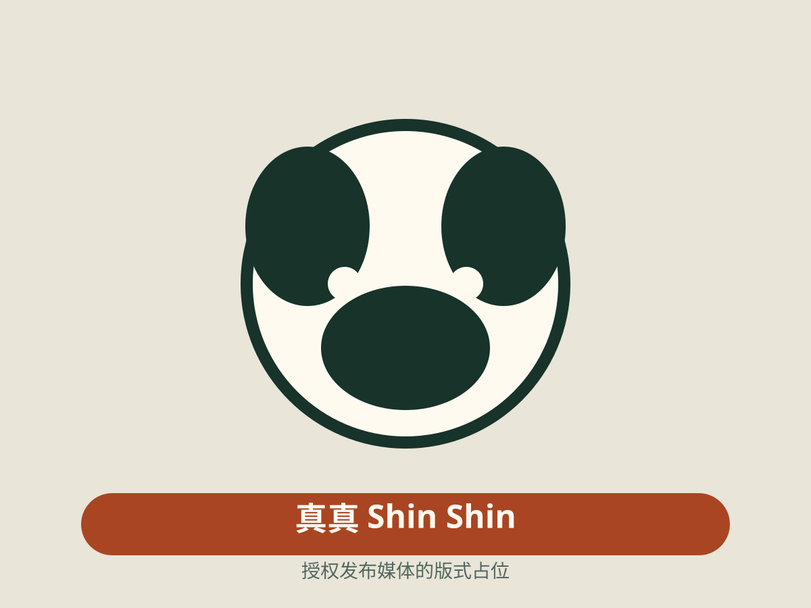
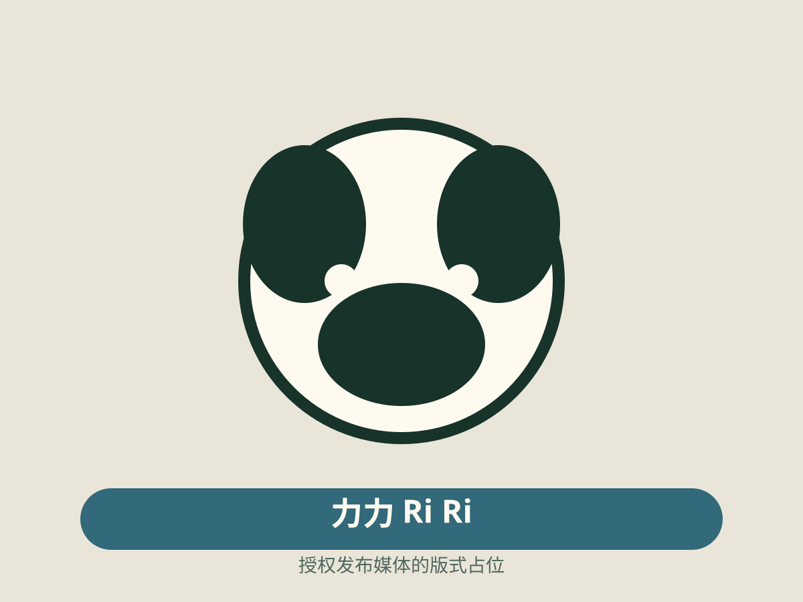

Twin path A
晓晓 Xiao Xiao
亲本关系已确认
- 2021-06-23 · 独立出生事件记录
- 2021-10-08 · 独立命名事件记录
- 2026-01-28 · 与蕾蕾共享的返回事件
Family Fieldbook · Twin parallel
上野双胞胎晓晓与蕾蕾共享出生、命名和成长时期，却始终拥有独立身份、事件记录和档案；父母真真与力力的关系证据和返回旅程构成这段紧凑的四成员故事。

01 · Twin constellation
晓晓与蕾蕾可以在同一章节并行阅读，但各自保留稳定 ID、性别、档案、事件与来源。
02 · Parallel chronology
同日同来源不是合并依据。只有真正共享一个稳定事件 ID 的返回事件才作为一个多参与者时刻展示。
真真与力力共享抵达上野动物园的公开事件和长期居住章节。关系故事从机构背景开始，但不把同住当作亲缘证据。
晓晓与蕾蕾于同日出生。当前模型可按日期形成“双胞胎章节”，但两个独立事件 ID、成员和档案保持可检查。
命名章节并行展示两只熊猫的独立记录。名字、性别和身份不依赖视觉对称来区分。
父母的 2024 年返回事件先于双胞胎发生，形成家庭地点变化的第一段。页面不把双胞胎提前写入父母的事件。
2026 年的返回是双胞胎共享的一个多参与者事件，因此在家族时间线中展示一次，并列出两位参与者。
03 · Place chapters
家族故事展示已发布的顺序关系，不推断精确坐标，也不把每位成员的到达时间压成同一个家庭日期。
04 · Documentary media
当前发布版本为四位成员都提供授权影像。家族故事不必展示所有可用图片，但每张入选图片只代表其明确标识的熊猫、日期语境和来源。

Twins media state
晓 / 蕾本原型把晓晓与蕾蕾的授权影像留在个体档案，不在家族层重复展示。这里的无图是编辑选择，不是媒体权利缺失。
05 · Evidence and revisions
结构化谱系仍是关系任务的主表面；家族故事只提供当前范围的证据摘要与跳转。